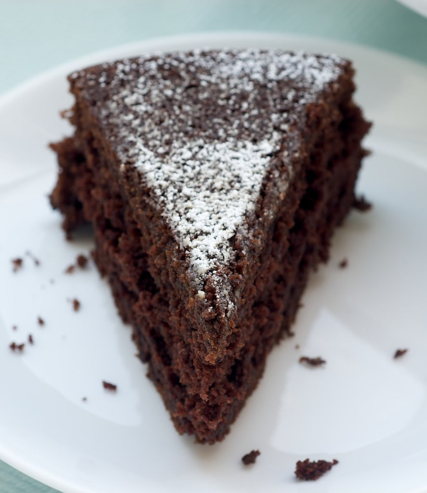

Cocoa cake

Description:
cake for birthdays and everyday.
Ingredients:
- 1 and 1/2 cups all-purpose flour
- 1 cup sugar
- 3 tablespoons baking cocoa
- 1 teaspoon baking soda
- 1/2 teaspoon salt
- 1/3 cup canola oil
- 1 tablespoon white vinegar
- 1 teaspoon vanilla extract
- 1 cup cold water
- Confectioners' sugar
Steps:
- Preheat oven to 350°. In a large bowl, whisk flour, sugar, cocoa, baking soda and salt. Using a spoon, make 3 wells in the dry ingredients. Pour oil into the first, vinegar into another and vanilla into the third. Slowly pour water over all. Beat on low speed until thoroughly combined (batter will be thin).
- Pour into a greased 8-in. square baking dish. Bake until a toothpick inserted in the center comes out clean, 30-35 minutes. Cool in pan on a wire rack. Dust with confectioners' sugar.